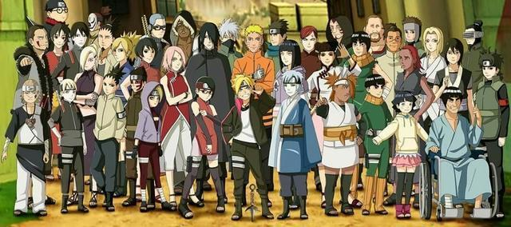
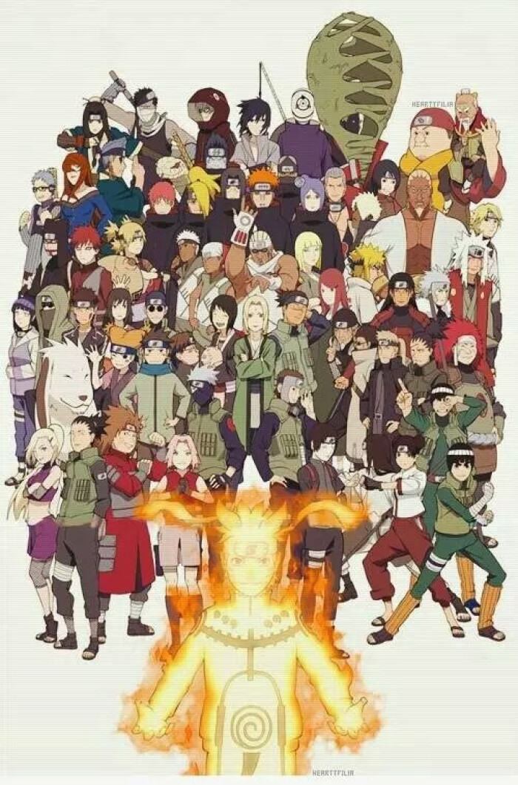
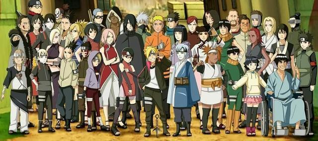
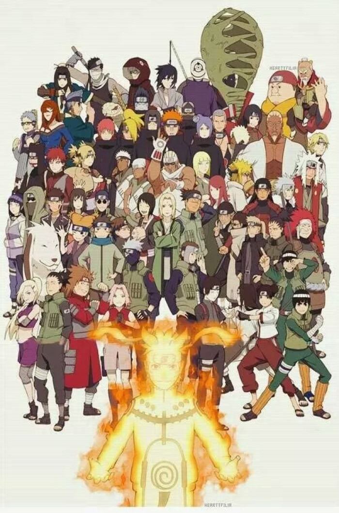

日志
大学，对于我而言依然是一个陌生的名词。轻松的学习生活，丰富多彩的娱乐生活，这样的一种悠闲的氛围对我来说是充满了罂粟般的诱惑。大学，意味着不需再埋首于辞海题库了，不需再徘徊于三点一线的生活中了， 可以光明正大的逃课，可以自由自在的上网，生活自由自在无拘无束。只是，时间多了，太多了，太自由了，心就开始茫然了，日子也开始变得空虚了。而这时，一份具体且适当的大学学业生涯规划就显得十分重要了. 大学，是一个人从半成熟走向成熟的过程，是一个人人生观、价值观。世界观逐渐成熟的过程，是一个人人格形成和完善的过程。当然，在大学里你也可以选择漫无目的，整日无所事事，最终四年以后回首时发现自己 一事无成,留下的是四年的苍白。而我，希望四年以后我可以很满意的对自己说：这四年我没有白活，这四年我学会了很多，这四年将对我的未来产生积极而深远的影响，这四年是我人生中值得回忆的四年！所以我制定 了这一份《大学学业生涯规划》。这是我的大学四年的一个整体规划。本规划分为自我认识、职业生涯条件分析（包括家庭条件、学校条件、社会环境、职业环境等）、学业目标定位和具体规划。这几个部分是紧密联 系在一起的，学习、生活、娱乐和工作是相互联系密不可分的一个整体。这不仅是一个学业生涯的规划，也是我人生的一个规划。我相信：路，就在脚下； 路，就印在不死的决心之中；路，是汗水筑起的一片生活； 路， 是一步一步走出的一段人生。大学，便是这漫长人生路上的一个驿站。我会走好大学的这一段路，让人生不留下遗憾！
作品
相册
.


 



联系
QQ:617286944
手机：17366633011
邮箱：617286944@qq.com